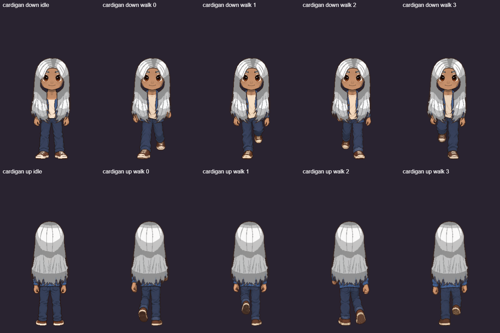
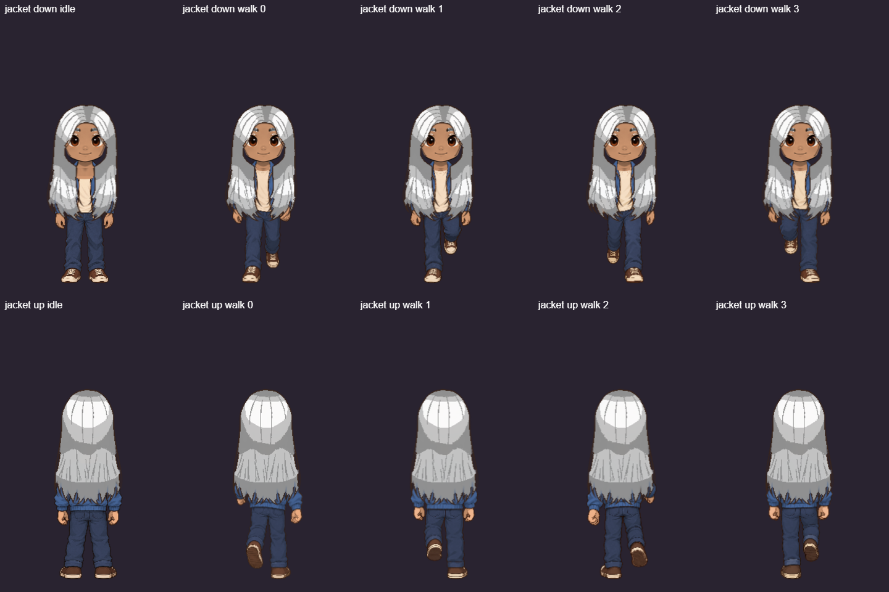
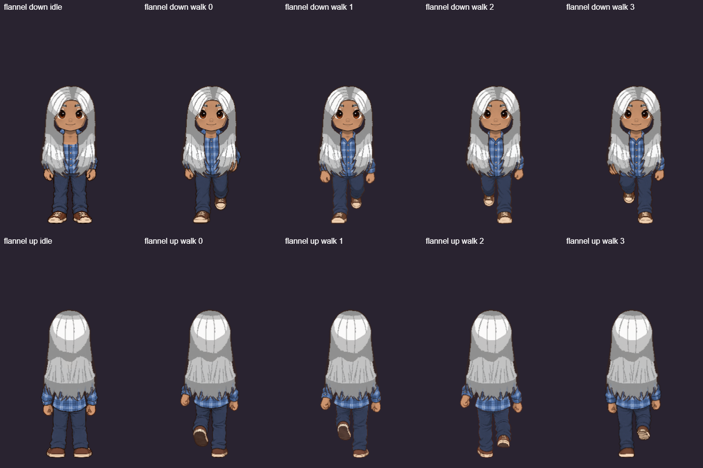
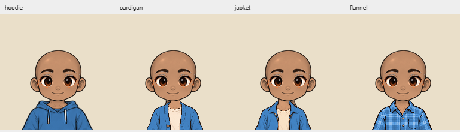

These captures use the game's actual character renderer: approved front/rear idle and walking bodies, the selected colors, and the existing head and hair layers.
The new paintings are installed for jeans with sneakers. Other bottom and shoe combinations keep their established complete artwork; side views and other tops await the same outfit-by-outfit review.



Live asset provenance checks · Publication validation · 240 passing tests
